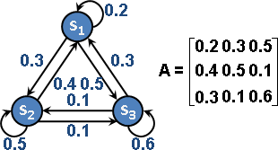
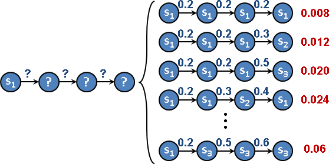
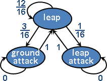
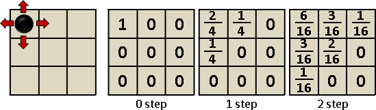
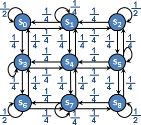

Markov Chain
Markov Chain
許多個狀態，每個狀態都可以轉移到其他狀態，轉移機率的總和都是1。轉移機率習慣寫成一個矩陣，稱作「轉移矩陣Transition Matrix」、「隨機矩陣Stochastic Matrix」。
選定一個狀態作為起點，不斷移動（不斷轉移狀態、狀態不斷變化），走出一條路線。考慮所有可能的路線，每一條路線都可以明確計算其機率。將所有路線，朦朧地幻想成一條路線，步步充滿隨機，這條路線叫做「馬可夫鏈」。
Markov Chain可以看成圖論的有向圖：狀態是點，狀態轉移是邊，機率是邊的權重，轉移矩陣是圖論資料結構adjacency matrix。
Markov Chain的主要功用，是預測事情的未來發展。一些體積微小、性質穩定的東西（例如空氣分子、細胞），適合使用Markov Chain模擬未來發展情況（例如氣體擴散、細胞繁殖）。Markov Chain是物理模擬、化學模擬領域的重要工具。
動畫：http://setosa.io/blog/2014/07/26/markov-chains/
走n步抵達什麼狀態？
一個狀態的機率，是所有來源狀態各自乘上轉移機率，再加總。
走1步，可以表示成矩陣乘以向量。矩陣是轉移矩陣的轉置，向量是每個狀態的抵達機率。一開始，起始狀態的抵達機率是1，其餘狀態的抵達機率是0。
走n步，即是矩陣的n次方乘以向量。類似於圖論的Transitive Closure。
最終走向什麼狀態？
走無限多步。矩陣的∞次方。中途可能收斂到某個狀態。
直覺的演算法：一步一步走，矩陣一個一個乘。
較快的演算法：計算eigenvalue的絕對值。
數學家已經證明：
一、eigenvalue一定包含1。 二、所有的eigenvalue，絕對值均小於等於1。
結局可能是：
一、只有一個1，其他均小於1：收斂至1的eigenvector的方向上面。 二、有許多個1：收斂至這些eigenvector構成的區域裡面。 三、有-1：狀態不斷循環。 四、有虛數、其長度為1：狀態不斷循環。
若將這個世界的時間線想成是Markov Chain，那麼這個世界的未來，也許同歸於一，也許不斷輪迴。
途中走過什麼狀態？
reducibility：狀態x到y，有路可通（機率大於零）。即是圖論的Reachability。
periodicity：狀態x到x，所有可能的步數，找出其規律。即是找出經過A的環，找出其邊數，找出其規律。類似於圖論的Cycle Basis。
recurrent：狀態x出發，所有路線都走回x，無法擺脫輪迴。
每個狀態出現多少次？
https://class.coursera.org/smac-002/lecture/
http://www.52nlp.cn/lda-math-mcmc-和-gibbs-sampling1
http://www.52nlp.cn/lda-math-mcmc-和-gibbs-sampling2
當轉移機率滿足某些條件時，我們可以藉由隨機取樣，得到合法狀態，並且得到每個狀態的出現比例。
關鍵字是stationary distribution、steady state distribution、equilibrium distribution。
UVa 10828 11021 11762 12730 11680 Timus 1766
應用：Animation State Machine
Animation State Machine
遊戲動畫、遊戲AI、遊戲平衡的經典工具！
這裡提供的Markov Chain只是推測，應該是錯的。
應用：Random Walk
Random Walk on 3x3 Grid
一個3x3的方格棋盤，左上角放著一個棋子。棋子可以上下左右移動一格，機率各是1/4。如果棋子出界，那麼棋子歸回原位。
棋子走零步，停於左上的機率為1，其餘格子為0。
棋子走一步，停於左上的機率為2/4，上、左的機率各為1/4，其餘為0。
棋子走兩步，停於左上的機率為6/16，上、左的機率各為3/16，右上、左下的機率各為1/16，中央為2/16，其餘為0。
那麼棋子走n步呢？

_______ [2] [ 2 1 0 1 0 0 0 0 0 ] [1]
|0|1|2| [1] [ 1 1 1 0 1 0 0 0 0 ] [0]
|-+-+-| [0] [ 0 1 2 0 0 1 0 0 0 ] [0]
|3|4|5| 1 [1] 1 [ 1 0 0 1 1 0 1 0 0 ] [0]
|-+-+-| - [0] = - [ 0 1 0 1 0 1 0 1 0 ] [0]
|6|7|8| 4 [0] 4 [ 0 0 1 0 1 1 0 0 1 ] [0]
‾‾‾‾‾‾‾ [0] [ 0 0 0 1 0 0 2 1 0 ] [0]
board [0] [ 0 0 0 0 1 0 1 1 1 ] [0]
index [0] [ 0 0 0 0 0 1 0 1 2 ] [0]
^^^^^^ ^^^^^^^^^^^^^^^^^^^^^^^ ^^^
x1 A x0
走一步的結果，採用遞歸法來分析：一個狀態的機率，是所有來源狀態各自乘上轉移機率，再加總。計算方式恰好符合線性變換的定義，於是可以寫成矩陣。
走n步，即是計算矩陣的n次方。觀念如同圖論的「Transitive Closure」。
運用Markov Chain可以得知世界終焉之時，棋子大概會在哪。
發揮想像力，應用非常廣。迷路回不了家的機率、人類經濟活動與最終財富分配等等。
應用：PageRank
Markov Decision Process（Under Construction!）
Markov Decision Process
「馬可夫決策程序」。
【註：process是連續版本，chain是離散版本。此處的MDP是離散版本，照理要取名chain；而作者不知為何取名process。】
類神經網路、馬可夫決策程序（以時刻展開），兩者構造大同小異，於是最近計算學家拿類神經網路的計算設備來研究馬可夫決策程序。
http://ai.berkeley.edu/lecture_slides.html
應用：Pac-Man
Pac-Man
Automaton（Under Construction!）
Automaton
「自動機」。